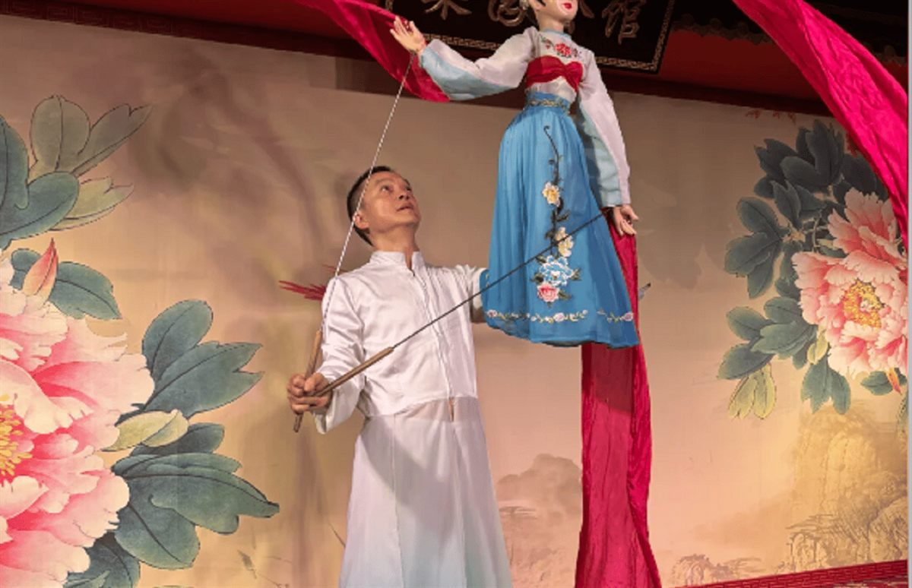
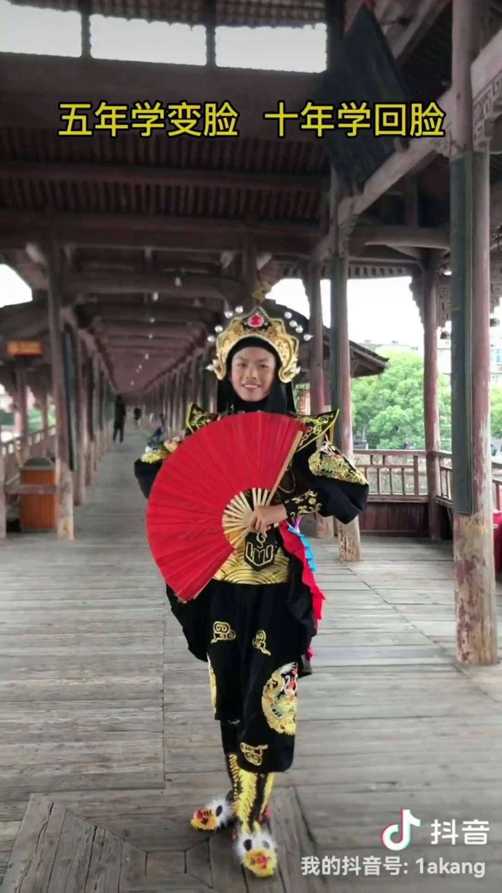
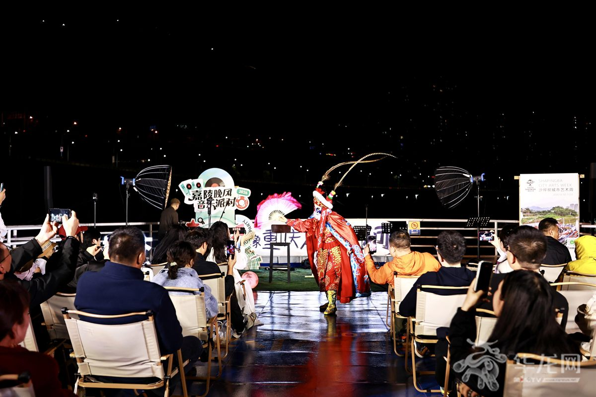

Deep Dive
图文分点详解

01
变脸 · 眨眼之间的七十二变
变脸是川剧中最负盛名的绝活，演员在台上一个转身、一挥袖、一低头，脸谱便瞬间换了模样。技法分为「扯脸」「揉脸」「吹脸」「贴脸」四类，最快的表演可在数秒内变换十余张脸谱，令人目不暇接。
- 扯脸：脸谱层层叠戴，用丝线瞬间扯下
- 吹脸：吹起粉状颜料，脸谱瞬间变色
- 情绪表达：红表忠勇、黑表刚直、白表奸诈

02
吐火 · 满堂喝彩的压轴绝活
吐火多用于表现神怪或情绪的爆发：演员口含松香粉末，对准火把猛然喷出，一道火龙腾空而起，火光映红舞台。这项技艺对气息控制要求极高，稍有不慎即会烫伤，是川剧最惊险的绝活之一。
- 松香粉末：细腻易燃，喷出即成火焰
- 气息控制：一口喷出，长短远近全凭功力
- 常见剧目：《白蛇传》《目连救母》等

03
五腔共和 · 昆高胡弹灯
川剧最大的音乐特色是「五腔共和」：昆腔典雅、高腔激越、胡琴柔婉、弹戏明快、灯戏诙谐。五种声腔在同一次演出中自如切换，造就了川剧既能演《白蛇传》的悲情，也能演《滚灯》的诙谐。
- 高腔：川剧最具代表性的声腔，帮腔人声烘托
- 灯戏：源自民间小戏，诙谐活泼
- 帮腔：幕后齐唱烘托气氛，川剧独有

04
观演指南 · 去哪里看川剧
成都有多家常年上演川剧的剧场，蜀风雅韵、芙蓉国粹最为知名，通常安排在晚间，演出含变脸、吐火、滚灯、手影戏等经典折子。宽窄巷子、锦里也有露天小戏台可免费观看片段。
- 蜀风雅韵：文化公园内，川剧与茶艺结合
- 芙蓉国粹：市中心商圈，交通方便
- 票价：约150-320元，含茶水与小吃